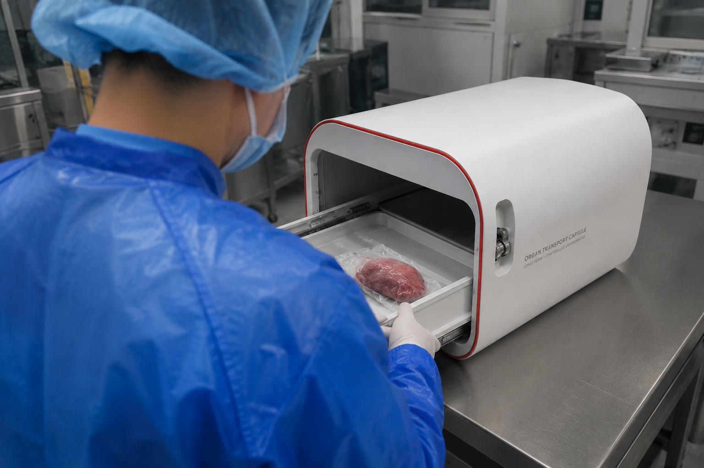
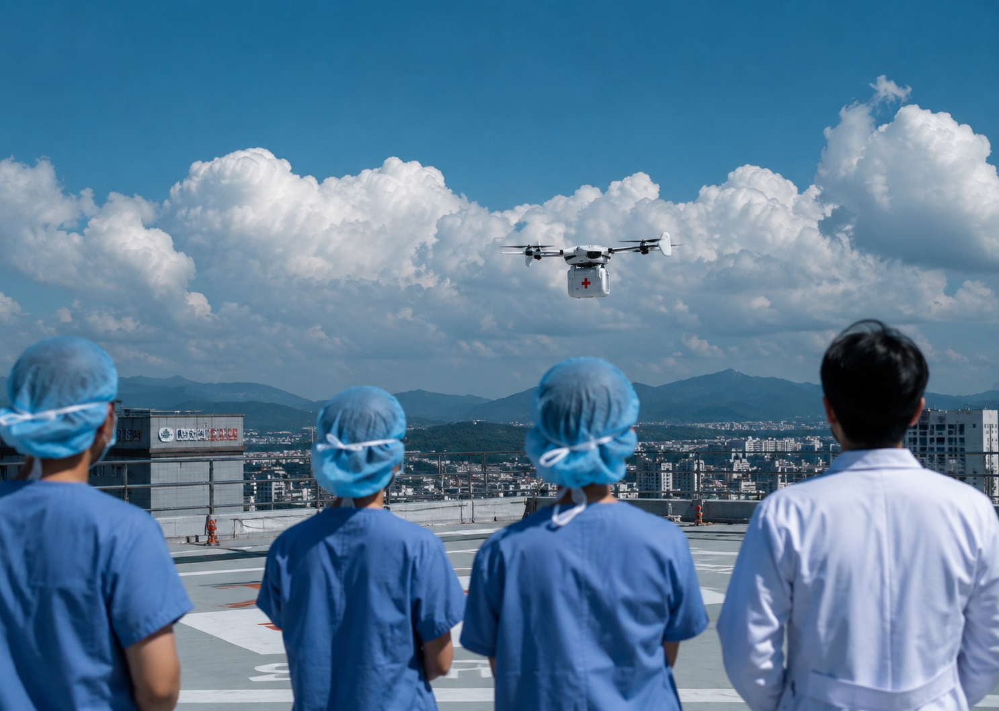
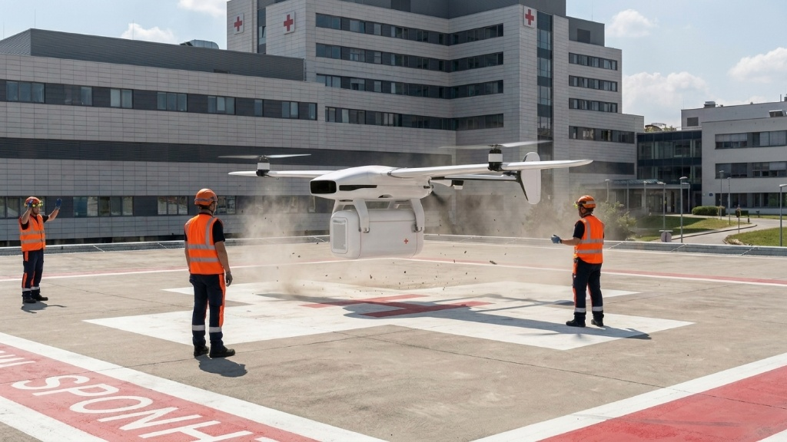
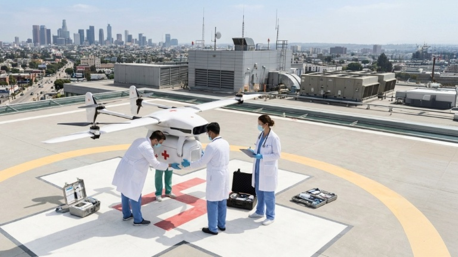

01 / DEPARTURE
보존 캡슐 탑재
적출된 장기는 전용 보존 용기에 담겨 ORION 캡슐에 탑재됩니다. RFID 인증이 완료되면 캡슐 내부의 온도, 습도, 충격 기록이 실시간으로 시작됩니다..


The Mission
ORION은 그 방정식을 다시 씁니다. 사람이 닿기 어려운 경로를 하늘로 대체하고, 운송의 모든 순간을 데이터로 지켜, 도착의 확률이 아니라 확신을 만듭니다.
Operation Flow
적출된 장기는 전용 보존 용기에 담겨 ORION 캡슐에 탑재됩니다. RFID 인증이 완료되면 캡슐 내부의 온도, 습도, 충격 기록이 실시간으로 시작됩니다..

드론은 병원 옥상에서 이륙하고, AI 경로 엔진은 실시간 기상과 공역 정보를 반영해 가장 안전한 항로를 설정합니다.

비행 중 캡슐의 온도, 습도, 충격, 위치 정보가 실시간으로 전송됩니다. 의료진은 운송 전 과정을 확인하며 장기의 상태를 안정적으로 관리할 수 있습니다.

목적지 병원에 도착한 캡슐은 RFID 인증을 통해 의료진에게 인계됩니다. 운송 중 기록된 상태 로그가 함께 전달되어, 장기의 이동 이력을 정확하게 확인할 수 있습니다.


The Network
도시의 병원들이 ORION 허브로 연결될 때, 장기는 더 이상 도로 위에서 시간을 잃지 않습니다. 하늘은 가장 빠른 응급 도로가 됩니다.